Material didáctico: Cilindro hidráulico
Nuestro propósito en está práctica guiada es representar de modo esquemático las partes mecánicas de un cilindro hidráulico. Además de poner en práctica asuntos ya estudiados añadiremos un conocimiento importante: la creación de caras.
Partimos de un cilindro (Añadir/Malla/Cilindro) al que le hemos desactivado la opción Cerrar extremos.
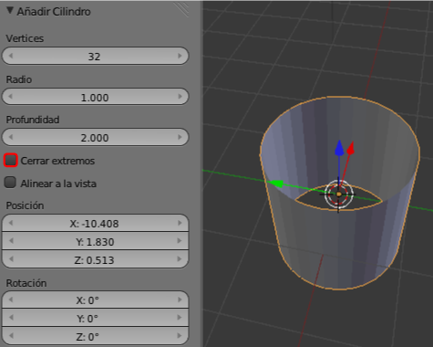Le aplicamos un modificador Solidificar con un valor para Grosor de 0.400.
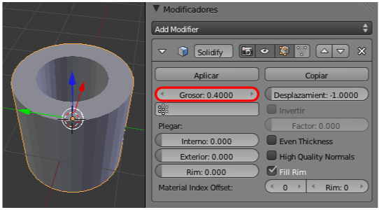Lo damos por bueno y generamos toda la malla necesaria pulsando el botón Aplicar.
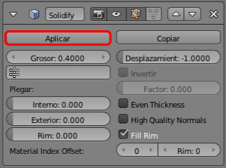Duplicamos este objeto y lo rotamos 90º en el eje Y ("Shift_D RY90").
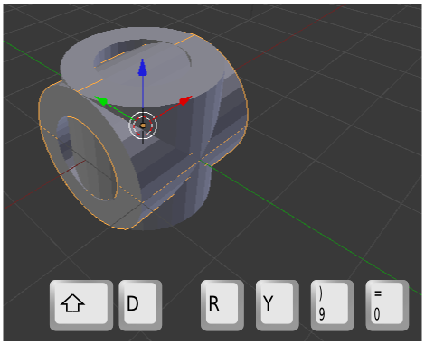Lo desplazamos con el Manipulador 3D en el eje X (rojo) y le aplicamos un escalado ("S") (el resultado lo representamos en la siguiente imagen en color azul). Después le aplicamos un escalado en ese mismo eje X ("SX").
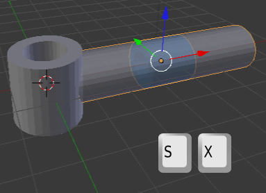
En este último objeto accedemos a Modo Edición  para seleccionar los bucles que definen un cuarto del cilindro y así poder eliminar las caras con "Supr"/Caras
para seleccionar los bucles que definen un cuarto del cilindro y así poder eliminar las caras con "Supr"/Caras
Llega el momento de ese conocimiento extra que mencionábamos más arriba: añadir las caras que cierran el cilindro. Es realmente muy sencillo; basta con seleccionar 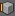 los lados que forman la cara y usamos la tecla "F" (también Malla/Caras/Crear borde-cara).
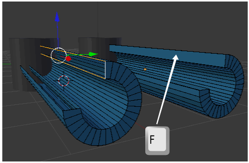Por supuesto, debemos hacer lo mismo con la otra cara.
Nos aseguramos de colocar el Cursor 3D en un lugar adecuado para añadir un nuevo cilindro (0,0,0, podría valer, aunque nos coincidirá con el primero de los cilindros, así que nada más sacarlo a la escena lo desplazamos en X con el Manipulador 3D).
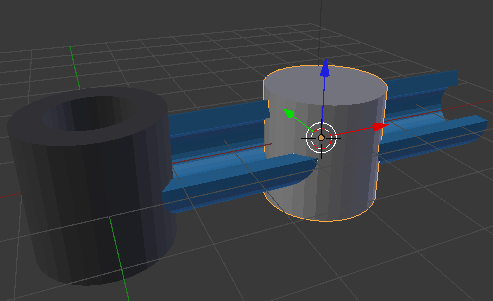Igual que hicimos antes, primero lo rotamos 90º en Y ("RY90"), y concluimos con un escalado en X ("SX") para originar el pistón.
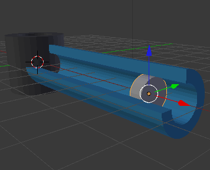Un simple duplicado ("Shift_D") de ese cilindro, con los escalados ("S") adecuados nos sirve para representar el llamado vástago.
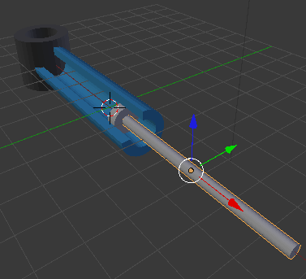Necesitamos volver a usar el recurso del cilindro con modificador Solidificar. En esta ocasión hemos colocado el cilindro (que será el buje) sin los vértices de las tapas en la posición que indica esta imagen.
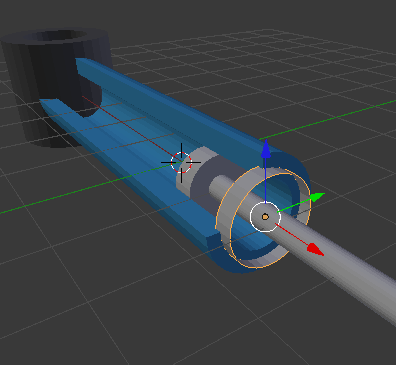A la hora de aplicarle el modificador lo hacemos para que el agujero quede ligeramente mayor que el diámetro del vástago (ya sabemos que al darle el visto bueno es conveniente Aplicar el modificador)
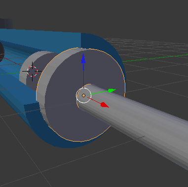Le aplicamos el mismo material que a la pieza llamada camisa. Nosotros hemos optado por un hexadecimal 358ABD.
Sólo nos queda añadir un duplicado del primer cilindro con una rotación de 90º en X ("Sifht_D RX90") que, colocado al final del vástago, dará una apariencia al cilindro hidráulico como la que se muestra aquí.
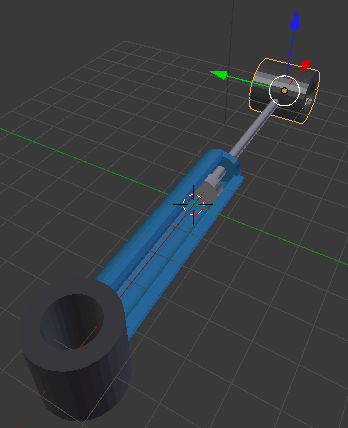Una bonita ilustración para explicar los componentes mecánicos del cilindro hidráulico (faltaría una entrada para fluidos, por ejemplo) sería esta imagen.
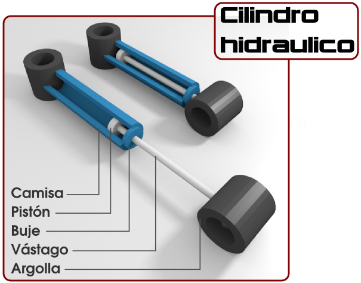